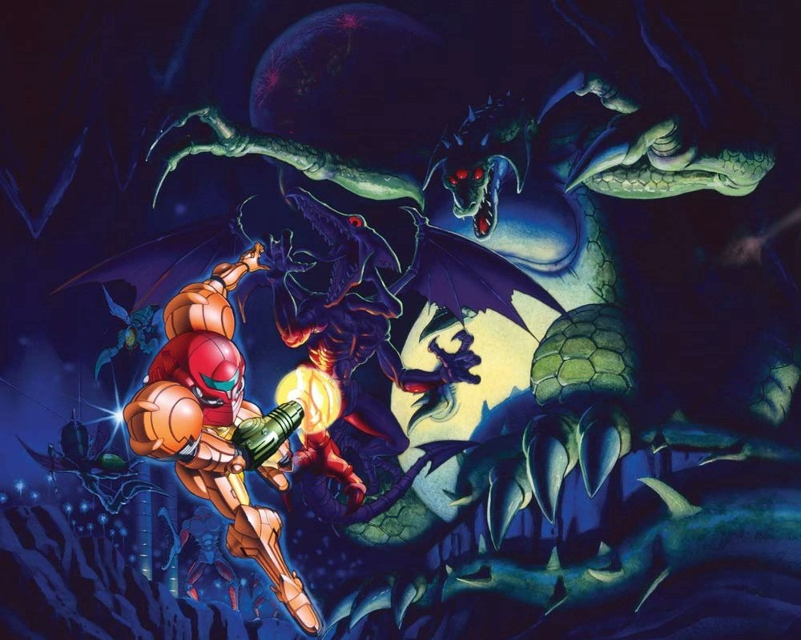
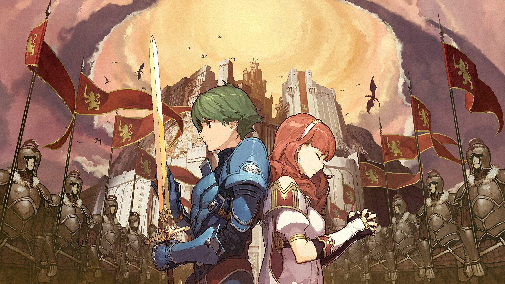
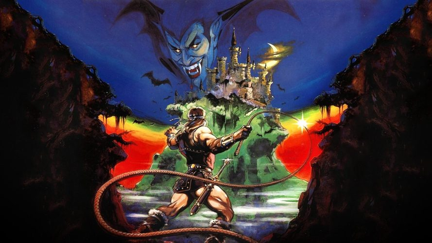
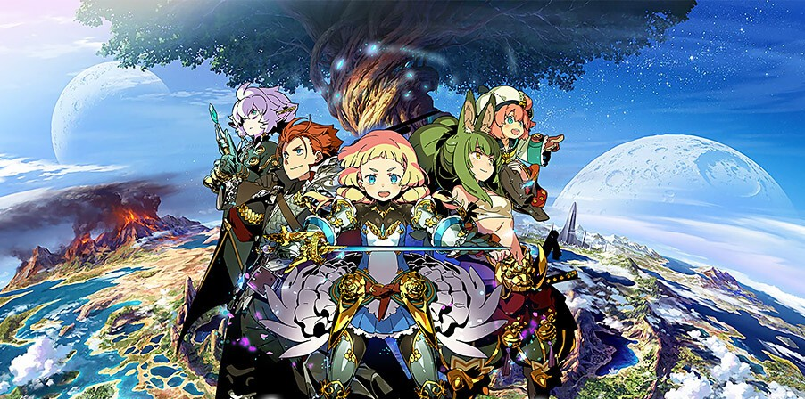
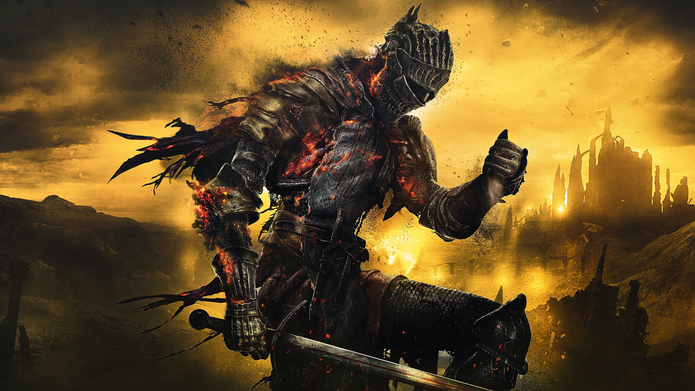

My Favorite Games
I’ve always wanted to create a list to keep track of my favorite game series that I have played throughout my life as a sort of archive to look back on. Many years from now, or just when I’m feeling nostalgic, I can come back to it and reminisce. The selection of game series for that list would be those that have left an especially lasting impact and shaped my tastes in genres. In other words, my “Pillars of Gaming” as I refer to them in my head (sounds kind of corny reading this back but whatever, you get the idea).
Now that I’m learning HTML, I thought this was the perfect opportunity to work on something that could create such a list, or more specifically, create an entire site containing custom pages for each and every game! As I become more skilled at web design, I will continue to add to this site and make it more dynamic. I look forward to seeing how far I can take it!
Below you will find a list that contains a description of each one of my “Pillar” series with the link to a page dedicated to them located within the titles themselves. I decided to organize them by chronological order of when I played them rather than release or alphabetical order.
Table of Contents
- Metroid
-

Sci-fi Action-Adventure series that follows Inter-Galactic bounty hunter Samus Aran, whose mission is to eradicate the titular hostile parasitic organisms known as Metroids and the Space Pirates who aim to harness their power to terrorize the universe. Samus often finds herself exploring remote planets in complete isolation. The series takes a lot of inspiration from the Ridley Scott film Alien and H.R. Giger's art with one of the main villains even being named “Ridley”. Big focus on exploration. - Fire Emblem
-

Fantasy Tactical Role-Playing Game(RPG) series that features a vast ensemble of characters with each entry where you strategically control your army to defeat enemy kingdoms, undead monsters, and dragons. A main feature of this series is Perma-Death, where units that fall in battle are lost forever (unless you restart your game). - Castlevania
-

Gothic Horror Action-Adventure series following the heroic Belmont Clan of vampire hunters on their generations-spanning battle against Count Dracula and his armies of the night. Most classic titles are linear side-scrolling action platformers, but after the release of Castlevania:Symphony of the Night, the series leaned more into exploration (similar to Metroid). - Ace Attorney
-

Legal Drama Visual Novel series that follows defense attorney Phoenix Wright as he investigates crime scenes and defends his clients in court. In pursuit of the truth, he cross-examines witnesses in the courtroom in order to find contradictions in their testimonies that will turn the whole case on its head.
Front Page - Etrian Odyssey
-

Dungeon Crawler Role-Playing Game(RPG) where the player can create their own party of adventurers in order to explore various labyrinths near or within the gargantuan trees around the world. The series has the player create their own grid-like maps of the labyrinths they explore in order to find their way and continue onward.
Front Page - Monster Hunter
-

Action Role-Playing Game(RPG) where the player creates their own character(hunter) and takes on quests to hunt or capture a myriad of monsters. After successfully returning from a quest, hunters can use the materials they have gathered to create better equipment to help them with future expeditions. Multi-player focused but can be played solo.
Front Page - Dark Souls
-

Dark Fantasy Action Role-Playing Game(RPG) where a nameless undying warrior(the player) wakes up in a perilous, decaying world and sets out to discover the fate of undead humans like themselves. Most of the story of this series is told through scattered texts and environmental details. Upon death, the player drops all of their “souls” which is the in-game currency used to level up or purchase items. If the player fails to retrieve their souls before dying again, all of it is lost. This fact leads players to be more mindful of their surroundings, as the punishment for failure is steep.
Front Page